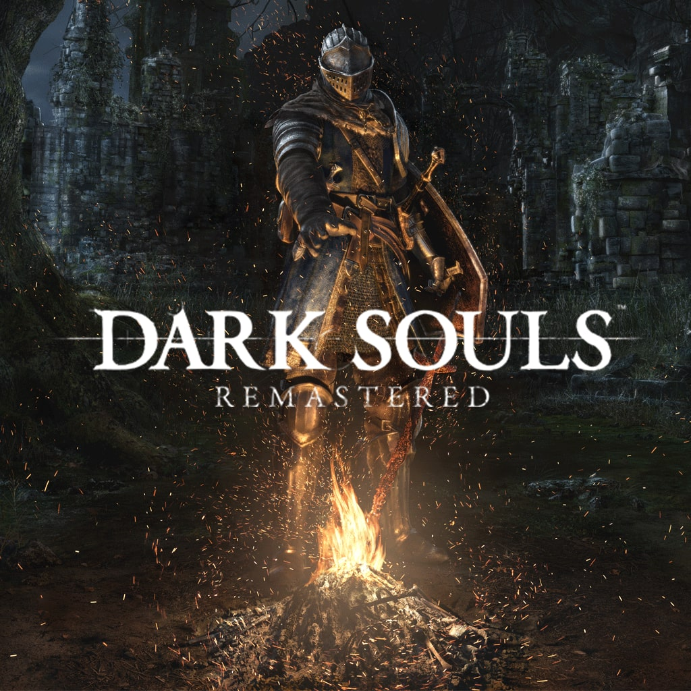

DARK SOULS
Como ya he comentado antes From Software ha desarrollado y su juego mas famoso es Dark Souls y sus otras 2 entregas.
En esta página se verá la nombre de la entrega con su año de salida, una breve descripción y un video del gameplay de este
Dark Souls
Dark souls tuvo su fecha de lanzamiento en 2011 y una version remaster en 2018 fue el 2º juego creado por From Software en el ambito de "alta dificultad" y el mas famoso de todas sus entregas, ya que se nos presentaba un mapa con una conexion de zonas INCREIBLES, unos jefes muy memorables y variedad de builds inmensa debido a la cantidad de armas que hay.
Dark Souls 2
Dark Souls 2 fue lanzado en 2014 e hizo que la comunidad esté dividida debido a que muchos afirman que este es el peor juego de la trilogia mientras que otros afirman que es el mejor con diferencia. En mi humilde opinion que nadie ha pedido yo estoy en el lado de los que afirman que este juego es el peor, debido a su tosca movilidad que es peor que la del anteior, cantidad masiva de enemigos y de bosses sencillos pero como la movilidad es horrible sean muy pesados y mas cosas malas que tiene este juego
Dark Souls 3
Para finalizar tenemos Dark Souls 3 lanzado en 2016 y el ultimo (por el momento) juego de Dark Souls, en este juego comparado con el anterior volvemos a los origenes y aunque no supere al original se nota muy fresco y con una movilidad muy suave y comoda, aqui tambien tenemos jefes emblematicos y en este juego sacaron 2 DLCs con zonas con una muy buena ambientacion y unos jefes INCREIBLES.